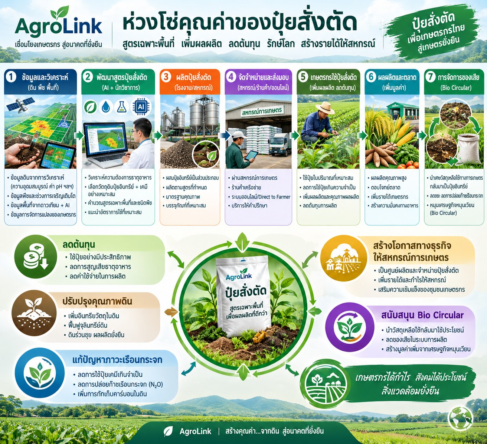

เชื่อมข้อมูลตรวจดินของแต่ละแปลง เข้ากับการคำนวณสูตรปุ๋ย การรวมความต้องการระดับสหกรณ์ และการประมูลซื้อแม่ปุ๋ยข้ามสหกรณ์ ไว้ในขั้นตอนเดียวบนแพลตฟอร์ม AgroLink

แนวคิด "ปุ๋ยสั่งตัด" เป็นแนวทางที่วงการวิชาการเกษตรของไทยส่งเสริมมานานหลายปี หลักการคือใช้ผลตรวจวิเคราะห์ดินของแต่ละแปลงจริง เช่น ค่าไนโตรเจน ฟอสฟอรัส โพแทสเซียม และความเป็นกรด-ด่าง มากำหนดสัดส่วนปุ๋ยที่ตรงกับความต้องการของดินและพืชในแปลงนั้น ๆ แทนการใส่ปุ๋ยสูตรเดียวกันทุกแปลงตามความเคยชินหรือคำแนะนำแบบเหมารวม ซึ่งมักทำให้ใส่ปุ๋ยเกินความจำเป็นในธาตุที่ดินมีอยู่แล้ว และขาดในธาตุที่ดินต้องการจริง ส่งผลให้ต้นทุนปุ๋ยสูงเกินความจำเป็นโดยไม่ได้ผลผลิตที่ดีขึ้นตามไปด้วย
ในทางปฏิบัติ อุปสรรคสำคัญของแนวทางนี้ไม่ใช่หลักวิชาการ แต่คือขั้นตอนที่กระจัดกระจาย ตั้งแต่การส่งตรวจดิน การคำนวณสูตร ไปจนถึงการหาซื้อแม่ปุ๋ยแต่ละชนิดมาผสมเองในราคาที่คุ้มค่า ซึ่งเกษตรกรรายย่อยแต่ละคนมักไม่มีเวลาหรืออำนาจต่อรองมากพอ AgroLink จึงออกแบบให้ขั้นตอนเหล่านี้เชื่อมต่อกันเป็นวงจรเดียวบนแพลตฟอร์มเดียว โดยมีสหกรณ์เป็นแกนกลางที่รวบรวมความต้องการ ของสมาชิก และเชื่อมต่อไปถึงการรวมคำสั่งซื้อข้ามสหกรณ์เพื่อเปิดประมูลราคาแม่ปุ๋ยปริมาณมาก ตามรายละเอียด 4 ขั้นตอนด้านล่าง
ประโยชน์ครอบคลุมตั้งแต่ระดับแปลงของสมาชิกแต่ละราย ไปจนถึงระดับเครือข่ายสหกรณ์ทั้งหมด
ใส่ปุ๋ยตามธาตุที่ดินขาดจริงเท่านั้น ไม่เสียเงินซื้อธาตุอาหารที่ดินมีอยู่แล้วเพิ่มโดยไม่จำเป็น
อ้างอิงจากผลตรวจดินจริงของแปลงนั้น ๆ แทนการใช้สูตรเดียวกันเหมารวมทั้งพื้นที่
ระบบเทียบราคาต่อกิโลกรัมจากผู้จำหน่ายที่ลงทะเบียนไว้ให้อัตโนมัติ ไม่ต้องเดินสายถามราคาเอง
สหกรณ์รวมคำสั่งซื้อของสมาชิกหลายรายเป็นก้อนเดียว ได้ราคาที่ดีกว่าการซื้อแยกทีละราย
รวมคำสั่งซื้อแม่ปุ๋ยจากหลายสหกรณ์เข้าด้วยกัน แล้วเปิดประมูลแข่งราคาแบบปิด ได้ราคาต่ำที่สุด ณ ขณะนั้นจริง
เชื่อมข้อมูลตั้งแต่ผลตรวจดิน สูตรปุ๋ยที่คำนวณได้ ไปจนถึงปุ๋ยที่ประมูลซื้อและจ่ายให้สมาชิกจริง
4 ขั้นตอนที่เชื่อมต่อกันบนแพลตฟอร์ม AgroLink ตั้งแต่ระดับแปลงจนถึงระดับเครือข่ายสหกรณ์
สหกรณ์แนะนำและสนับสนุนให้สมาชิกบันทึกผลตรวจดินของแต่ละแปลง เช่น ค่าไนโตรเจน ฟอสฟอรัส โพแทสเซียม ความเป็นกรด-ด่าง และปริมาณอินทรียวัตถุ ลงในบัญชีหน่วยผลิตของสมาชิกในระบบ ไม่ว่าผลตรวจจะมาจาก หน่วยงานภายนอกหรือชุดตรวจดินภาคสนามก็บันทึกเข้าระบบได้เช่นเดียวกัน
จากผลตรวจดินและชนิดพืชของแต่ละแปลง ระบบคำนวณสูตรปุ๋ยผสม (ยูเรีย ไดแอมโมเนียมฟอสเฟต และโพแทสเซียมคลอไรด์) ในสัดส่วนที่พอดีกับความต้องการจริง แล้วเทียบราคาปุ๋ยจากผู้จำหน่ายที่ลงทะเบียนในระบบให้อัตโนมัติ เพื่อหาราคาต่อกิโลกรัมที่ถูกที่สุดที่มีอยู่ ณ ขณะนั้น — ทดลองใช้เครื่องคำนวณสูตรปุ๋ย
เมื่อสมาชิกหลายรายต้องการสูตรปุ๋ยใกล้เคียงกันในช่วงเวลาเดียวกัน สหกรณ์รวมคำสั่งซื้อปุ๋ยของสมาชิกเป็นก้อนเดียว แทนการปล่อยให้สมาชิกแต่ละคนไปหาซื้อแยกกันเอง ทำให้สหกรณ์มีอำนาจต่อรองราคากับผู้จำหน่ายมากกว่าการซื้อทีละน้อย
เมื่อต้องซื้อแม่ปุ๋ยปริมาณมาก สหกรณ์เปิด "รอบรวมออเดอร์" ให้สหกรณ์อื่นแจ้งปริมาณเข้าร่วมได้ก่อน เมื่อปิดรับสมัครแล้ว ทีมงาน AgroLink จะแปลงยอดรวมทั้งหมดเป็นการประมูลซื้อแบบแข่งราคา (e-Auction) ก้อนเดียว ให้ผู้จำหน่ายหลายรายเสนอราคา แข่งกันแบบปิดราคา ผู้เสนอราคาต่ำสุด ณ เวลาปิดประมูลจะชนะและระบบออกสัญญาให้อัตโนมัติทันที สหกรณ์ที่ได้รับเลือกเป็น "สหกรณ์หัวขบวน" จะรับของและจ่ายเงินให้ซัพพลายเออร์ก่อน แล้วระบบแบ่งต้นทุนคืนให้สหกรณ์อื่นตามสัดส่วนที่แจ้งไว้โดยอัตโนมัติ ปุ๋ยที่ประมูลซื้อได้จะถูกนำไปจ่ายต่อให้สมาชิกตามสูตรปุ๋ยสั่งตัดของแต่ละแปลงในขั้นตอนที่ 2 การขนย้ายแม่ปุ๋ยปริมาณมากจาก "สหกรณ์หัวขบวน" ไปยังสหกรณ์อื่นที่ร่วมรอบรวมออเดอร์ ประกาศหางานขนส่งและ เปรียบเทียบราคาจากผู้ให้บริการขนส่งบนแพลตฟอร์มได้เช่นเดียวกัน
เข้าสู่ระบบสหกรณ์เพื่อเริ่มบันทึกผลตรวจดินของสมาชิก หรือทดลองใช้เครื่องคำนวณสูตรปุ๋ยดูก่อนได้ทันที